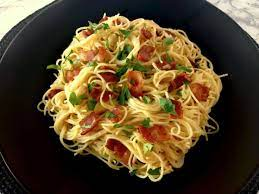
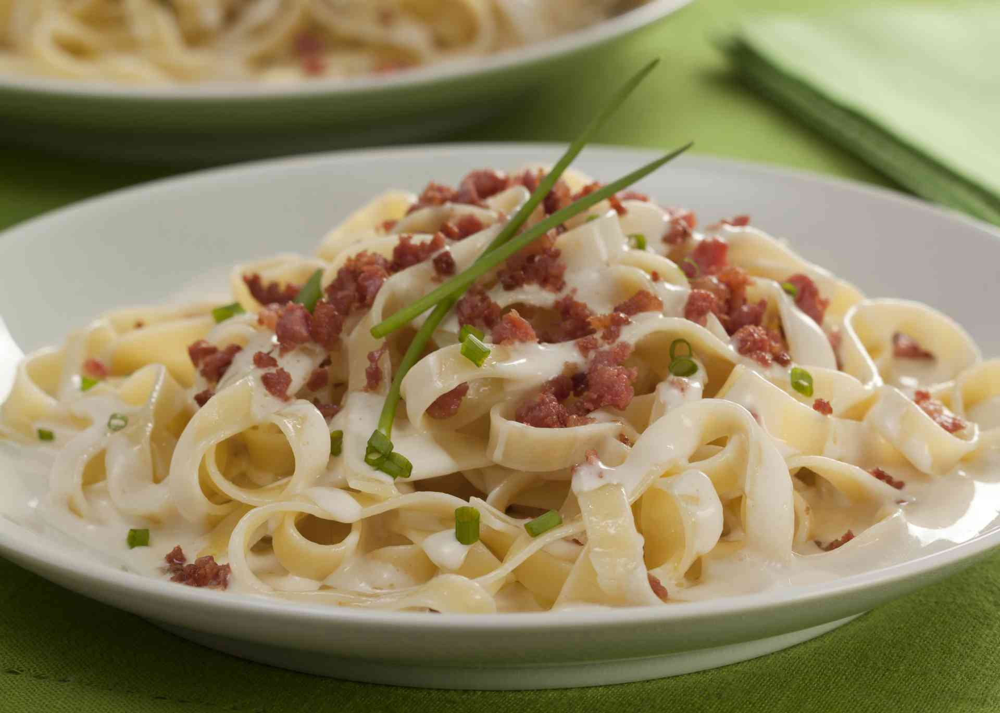
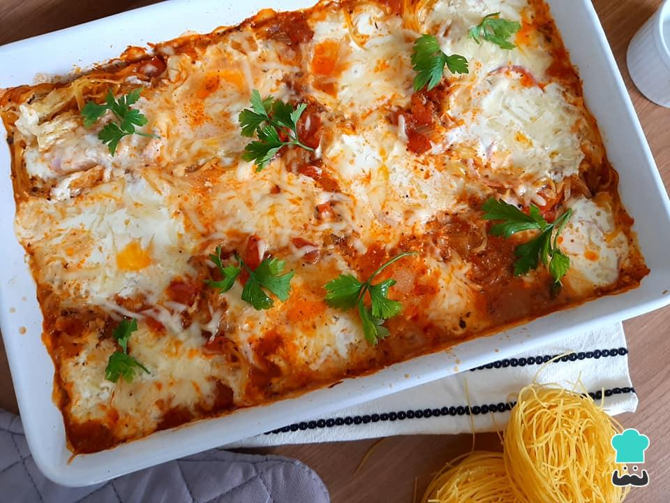
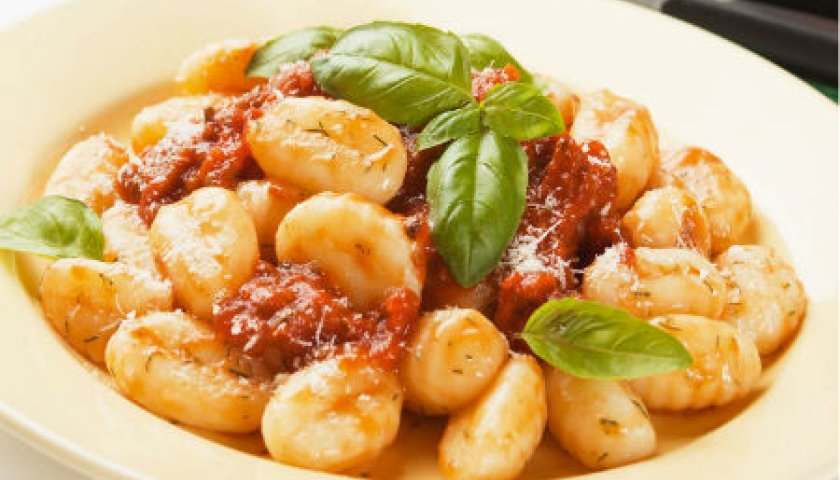
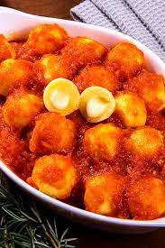
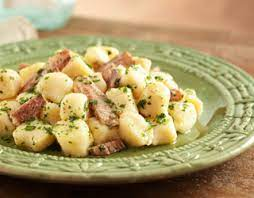
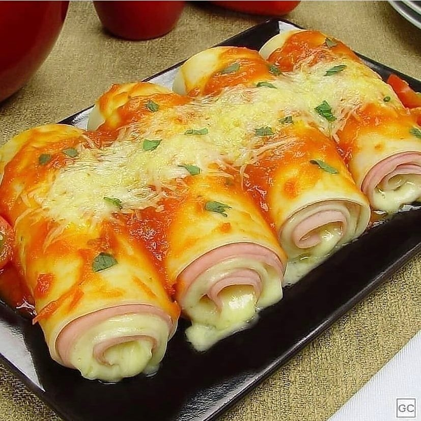
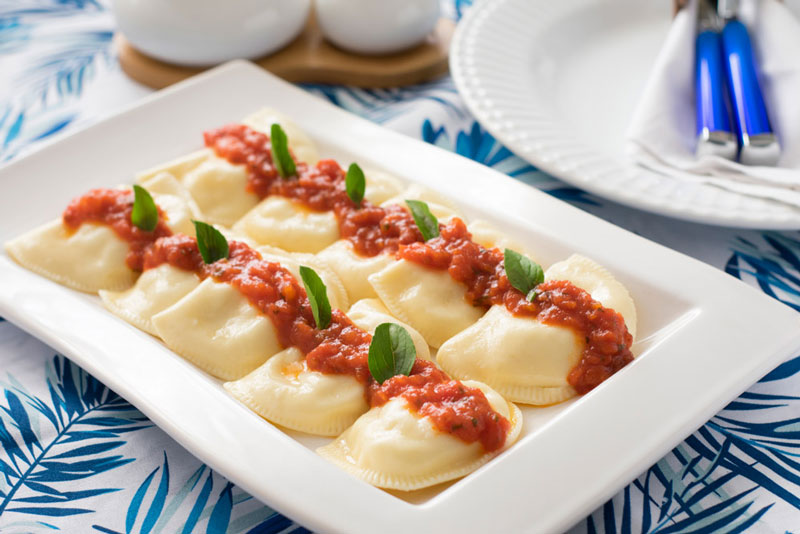

Espaguetes
ESPAGUETE À CARBONARA

200 g espaguete (ou outra massa longa de grano duro)
½ xícara (chá) de bacon em cubos (75 g)
¼ de xícara (chá) de vinho branco
2 ovos e 2 gemas
½ xícara (chá) de queijo parmesão ralado
sal e pimenta-do-reino moída na hora a gosto
Leve uma panela média com 2 litros de água ao fogo alto. Quando ferver, adicione 1 colher (sopa) de sal, junte o macarrão e misture. Deixe cozinhar, pelo tempo indicado na embalagem ou até ficar al dente.
Enquanto o macarrão cozinha, prepare os outros ingredientes. Numa tigela pequena quebre um ovo de cada vez e transfira para outra tigela (lembre-se: são 2 ovos inteiros e 2 gemas; você pode reservar as claras na geladeira por dois dias ou, melhor ainda, congelar para usar depois). Junte o queijo parmesão ralado e bata bem com um garfo para misturar.
Leve uma frigideira grande ao fogo médio. Quando aquecer, doure o bacon por cerca de 5 minutos, mexendo de vez em quando. Diminua o fogo, regue o vinho branco, com cuidado para não espirrar, misture bem e desligue o fogo.
Assim que o macarrão estiver cozido, reserve 1 xícara (chá) da água do cozimento.
Agora você vai precisar fazer tudo bem rapidinho: escorra a água, transfira o macarrão para a frigideira com o bacon quente, junte os ovos e misture bem – a ideia é que o calor da massa cozinhe os ovos, formando um creme. Volte a frigideira ao fogo bem baixinho e vá adicionando a água do cozimento reservada aos poucos, mexendo com uma espátula por alguns minutinhos até formar um molho espesso. Cuidado para não cozinhar demais os ovos. Sirva a seguir com pimenta-do-reino a gosto.
Prontinho... Uma delícia!
macarrão talharim ao molho branco

1 pacote de macarrão tipo talharim 500g
3 colheres de sopa de farinha de trigo
2 1/2 xícaras de leite
1 lata de creme de leite
1 colher de sopa de margarina
salsa picada
sal e pimenta-do-reino moída na hora a gosto
Cozinhe o macarrão.
Enquanto ele cozinha aqueça a manteiga em outra panela com o fogo baixo.
Adicione a cebola e a farinha de trigo.
Frite por 3 minutos, mexendo sempre.
Aos poucos vá colocando o leite.
Deixe cozinhando e vá misturando bem até obter um creme espesso.
Escorra o macarrão e o coloque em um recipiente.
Adicione por cima o molho branco e Polvilhe com salsa e tempero verde.
Prontinho... Uma delícia!
Macarrão cabelo de anjo no forno

300 gramas de macarrão cabelo de anjo
½ cebola picada
1 tomate picado
1 sachê de molho de tomate ou 2 xícaras de molho de tomate caseiroLI>
100 gramas de presunto em fatias ou cubinhos
150 gramas de queijo muçarela em fatias ou cubinhos
sal e pimenta-do-reino moída na hora a gosto
100 gramas de creme de leite
100 gramas de requeijão cremoso
queijo parmesão ralado (a gosto)
manjericão fresco ou desidratado (a gosto)
Numa panela média, aqueça o azeite de oliva e refogue a cebola picada no fogo médio-baixo até ficar transparente. Em seguida, acrescente o alho e depois o tomate picado, refogando mais um pouco.
Adicione o molho de tomate e a água. Tempere com sal, pimenta do reino e manjericão fresco ou desidratado. Deixe o molho cozinhando em fogo baixo por cerca de 10 minutos ou até engrossar levemente.
Num refratário médio, adicione 2/3 do molho de tomate
Acomode os ninhos de macarrão cabelo de anjo lado a lado sobre o molho, como na foto.
No centro de cada ninho do macarrão, coloque o presunto e o queijo muçarela fatiados ou em cubinhos.
Misture o requeijão cremoso e o creme de leite num bowl e, em seguida, cubra cada ninho do macarrão com essa mistura (por cima do queijo e do presunto).
Cubra tudo com o restante do molho de tomate, espalhando bem por todos os cantos do refratário. Por fim, polvilhe manjericão fresco ou desidratado.
Cubra o refratário com papel alumínio e leve ao forno pré aquecido para assar por, no máximo, 20 minutos. Depois, retire o papel alumínio e polvilhe queijo parmesão ralado. Leve ao forno novamente somente para gratinar por 10 minutos.
Prontinho... Uma delícia!
Nhoque
Inhoque de Batatas

2 kg de batata cozida e amassada
1 unidade de ovo
2 pitadas de sal
650 gr de farinha de trigo especial
Misturar bem os ingredientes enquanto as batatas ainda estiverem mornas (deixar esfriar apenas o suficiente para não queimar as mãos).
Utilizando uma nhoqueira ir cortando pedaços generosos, não muito pequenos.
Colocar em água fervendo e abundante.
Assim que subir retirar imediatamente, de preferência com uma escumadeira.
Recomenda-se que não coloque muitos gomos do nhoque na água para que possam ser retirados assim que subir para não correr o risco de se dissolverem.
Prontinho... Uma delícia!
Nhoque recheado de queijo

500 gramas de batatas grandes
650 ml de água
4 colheres de sopa de manteiga ou margarina
3 xícaras de chá de farinha de trigo sem fermento
Mussarela em cubos para rechear
2 sachês de molho de tomate pronto
sal e pimenta-do-reino moída na hora a gosto
Cozinhe as batatas, descasque-as e amasse-as bem, formando um purê. Reserve
Em uma panela, adicione a água, o caldo de carne, a manteiga e o sal. Misture e deixe ferver.
Desligue o fogo, acrescente a farinha e misture bem, até formar uma massa e soltar do fundo.
Coloque o purê de batata e misture até tudo incorporar.
Pegue pequenas porções da massa, coloque um cubo de queijo no meio de cada, feche moldando em formato de bolinha e disponha em um refratário.
Por cima, despeje o molho de tomate, salpique parmesão ralado e o cheiro-verde. Leve ao forno preaquecido a 200 ºC por cerca de 20 minutos.
Prontinho... Uma delícia!
NHOQUE DE SARDINHA

2 kg de batata cozida e amassada
1 unidade de ovo
2 pitadas de sal
650 gr de farinha de trigo especial
1 lata de Sardinha em Óleo
sal e pimenta-do-reino moída na hora a gosto
Cozinhe as batatas, descasque-as e amasse-as bem, formando um purê. Reserve
Em uma panela, adicione a água, o caldo de carne, a manteiga e o sal. Misture e deixe ferver.
Desligue o fogo, acrescente a farinha e misture bem, até formar uma massa e soltar do fundo.
Coloque o purê de batata e misture até tudo incorporar.
Numa frigideira aqueça a Sardinha Gomes da Costa com seu óleo. Junte a salsa e tempere com sal a gosto.
CDespeje este refogado sobre os nhoques.
Prontinho... Uma delícia!
Canelones e Etc
canelone Presunto e Queijo

1 pacote de massa fresca para lasanha (500g)
350g de queijo mussarela fatiado
350g de presunto fatiado-
2 xícaras (chá) de molho de tomate
Folhas de manjericão para polvilhar
sal e pimenta-do-reino moída na hora a gosto
Sobre cada quadrado de massa de lasanha, coloque uma fatia de mussarela e uma de presunto. Enrole como rocamboles e coloque, lado a lado, em um refratário grande untado.
Cubra com o molho de tomate, polvilhe com o parmesão e leve ao forno médio, preaquecido, por 20 minutos. Polvilhe com manjericão e decore com tomate-cereja. Sirva
Prontinho... Uma delícia!
RAVIÓLLI

100 gramas de farinha de trigo
1 ovo
Molho à gosto
1 colher rasa de sal
1 colher azeite
Fatias de presunto
Fatias de queijo
sal e pimenta-do-reino moída na hora a gosto
Coloque em uma tigela, a farinha, o ovo e o azeite e misture bem;
Quando for possível, misture na mão até formar uma massa firme;
Sove a massa com as mãos e, em seguida, deixe descansar por 30 minutos;
Abra a massa de ravioli caseiro em uma superfície lisa
Coloque o recheio com uma distância de aproximadamente 2 dedos e passe a água nas laterais dos recheios;
Aperte as laterais para ficar bem fechadinhos;
Em uma panela, coloque água fervendo e coloque-os para cozinhar;
Cozinhe em água fervente com sal a gosto por aproximadamente 3 minutos e retire da água
Faça o molho de sua preferência e jogue por cima dos raviolis em uma tigela de sua preferência.
Prontinho... Uma delícia!
Capeletti
 200 g de farinha de trigo
1/2 xícara de azeite
2 ovos
1 xícara de mussarela picada
1 xícara de bacon frito em cubos
sal e pimenta-do-reino moída na hora a gosto
Em uma tigela, adicione a farinha de trigo e abra um buraco no meio..
Adicione os ovos, o azeite e o sal.
Coloque a massa uma superfície lisa e enfarinhada e abra com um rolo
Coloque o recheio no centro e feche a massa formando um triângulo.
Cozinhe os capelettis em água fervente.
Prontinho... Uma delícia!
200 g de farinha de trigo
1/2 xícara de azeite
2 ovos
1 xícara de mussarela picada
1 xícara de bacon frito em cubos
sal e pimenta-do-reino moída na hora a gosto
Em uma tigela, adicione a farinha de trigo e abra um buraco no meio..
Adicione os ovos, o azeite e o sal.
Coloque a massa uma superfície lisa e enfarinhada e abra com um rolo
Coloque o recheio no centro e feche a massa formando um triângulo.
Cozinhe os capelettis em água fervente.
Prontinho... Uma delícia!